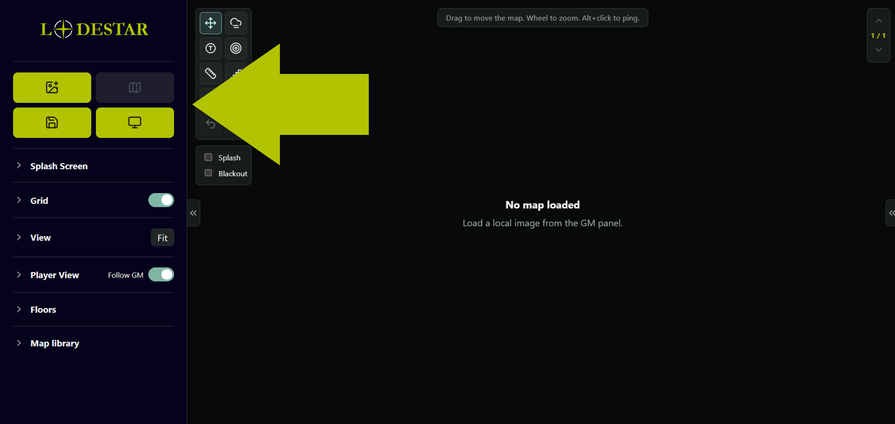
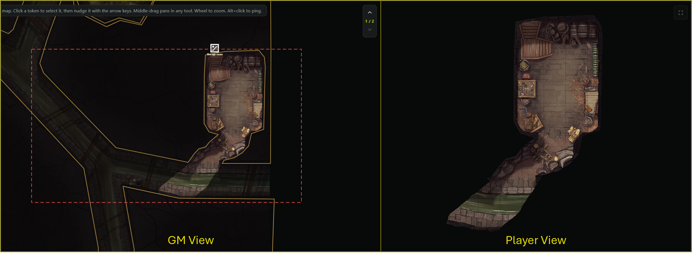
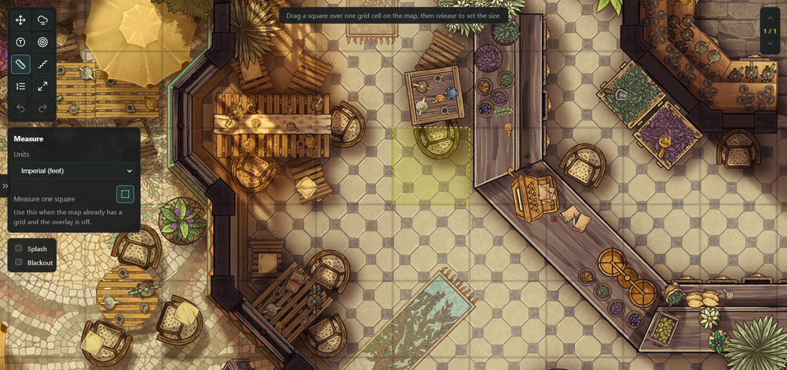

LODESTAR
User manual · lodestarvtt.com
What Lodestar is
Lodestar is a battlemap display tool for game masters. You run it from one browser window (the GM screen) and cast a second window (the player display) to a TV or second monitor. The GM sees everything; the players see only what you reveal.
Everything runs locally in your browser — no account, no cloud, nothing uploaded. Your maps live in your browser's storage on your own machine. It works fully offline once loaded.

Getting started
- Open Lodestar and click Enter on the welcome screen.
- In the top of the left panel, click the Load map button (the image icon) and pick a map image from your computer.
- The map appears. Use the mouse wheel to zoom and drag to pan. Press F (or click Fit) to frame the whole map.
The left panel is organised into collapsible sections (Grid, View, Player View, Floors, Map library). Click a section title to open or close it. You can hide the whole panel with the tab on the left edge of the map to give the map more room.

The player display ↑ top
Click Open player display (the monitor icon at the top of the panel). A second window opens — drag it onto your TV or second monitor and press F (or double-click) to make it fullscreen.
The player window shows the same map, but with fog as solid black and none of your GM-only tools. By default it follows your view; a red dashed rectangle on your GM screen shows exactly what the players are currently seeing.
- Follow GM (Player View section): when on, the player screen mirrors your pan/zoom. Turn it off to frame the players' view independently.
- Match GM view snaps the player view to your current framing once.
- You can drag the red frame itself to pan the players' view without moving your own (see Rotating & the player frame).

Grid & calibration ↑ top
The Grid section toggles the square grid and adjusts its size, offset, colour, opacity, and token snapping.
Calibrate to a map's own grid
If your map already has a printed grid, you don't have to match it by hand. Click the small square-dashed button next to the size slider (it's also in the Measure tool), then drag a square over exactly one cell of the map. Lodestar sets the grid size and lines the grid up to that cell, so tokens snap onto the map's own squares — even with the grid overlay hidden. The ruler is calibrated at the same time.

Fog of war ↑ top
Click the fog tool in the toolbar to open the fog ribbon. Fog hides the map from players; you cover areas and clear them as the party explores. Tokens and images sit under the fog, so anything in a hidden area is concealed.
- Fog area — click corners to trace a polygon, Enter to place. Named area adds a GM-only label.
- Fog shapes — drag to drop a rectangle, square, ellipse, circle, or triangle.
- Paint — brush fog on freehand (adjustable round/square brush; [ / ] resize it).
- Bucket — fill the entire map with fog at once.
- Erase — wipe brush/bucket fog away; you can paint back over an erased spot normally.
- Right-click a polygon area to remove it and clear the brush/bucket fog inside it (other polygon areas are left alone).
- Clear all fog empties everything.
On your GM screen fog shows as an adjustable tint so you can still see through it; players see solid black.

Tokens ↑ top
Select the Tokens tool. Click to drop a token, drag to move it, right-click to remove it. In the token options you can set a colour, a 1–4 cell size, a short label, or load a custom image.
Bulk-add: use "Add image tokens" in the token options and multi-select several image files — Lodestar drops one token per image in a tidy grid for you to arrange.
In Move mode you can drag a token to move it, or click it once to select it. A selected token shows eight pop-out orientation arrows — click one to step a cell in that direction, including diagonals; the keyboard arrow keys nudge it too (Delete removes it). As you step it, Lodestar traces the actual path and shows the distance moved, counted with the D&D 5e alternating-diagonal rule (every other diagonal costs an extra square). Dragging with the mouse shows the distance as well. Tokens snap to the grid and appear on both screens.

Images & notes ↑ top
Map images
Drag an image file straight onto the map (or use Add image in the View section) to drop it as a movable picture — handy for handouts, props, or overlays. Select it to move, resize, or rotate it, and toggle whether players can see it (hidden from players by default). There's also a Snap images to grid option.
Notes
Add note drops a GM-only sticky note on the map. Drag to move it, double-click to edit, Delete to remove, and resize it with the slider. Notes never appear on the player display.

Area of effect ↑ top
The Area of effect tool shows a live spell template that follows your cursor on both screens — a circle, cube/square, or cone. Pick the shape and a size in feet (presets or a custom value), and choose a colour. The cone rotates with the mouse wheel or the direction slider. It's a preview that follows the cursor, not something you place.

Measure & ping ↑ top
- Measure — drag to measure distance; it reports grid cells and your choice of feet or metres. (If the map has its own printed grid and the overlay is off, calibrate the ruler with the drag-a-square button.)
- Ping — hold Alt and click anywhere to drop an animated marker on both screens — great for "look here".
Initiative tracker ↑ top
Open the initiative tracker from its toolbar button (the numbered-list icon) or the retract tab on the right edge of the map. Add players, NPCs, and monsters with an initiative score and HP. Advance turns and rounds with the arrows, track damage and healing with the HP bars, and click a name to set the current turn.
A compact order overlay can sit in the corner of the screen:
- The GM toggle shows it on your screen; the Players toggle mirrors it to the player display.
- It stays visible even when the full panel is retracted, and has its own ‹ / › arrows to move through the round without reopening the panel.

Rotating & the player frame ↑ top
Rotate the map
In the View section, the Rotate map arrows turn the whole battlemap in 90° steps — fog, tokens, and stairs all rotate with it, and the players follow. You can also rotate just the player view (Player View section) so the map reads right-side-up from across the table, without rotating your own screen.
Drag the player frame to pan the TV
The red dashed rectangle is what the players see. In Move mode you can grab it and drag it to pan the player display in real time — perfect for following the party around a large map without touching your own view.

In-person play on a TV ↑ top
Lodestar is built for playing in person with a TV laid flat as the battlemap and physical miniatures on top. The player display becomes the tabletop; you drive it from your laptop.
- Open the player display and put it fullscreen on the TV.
- Turn Follow GM off so the TV has its own framing.
- Zoom the player view until one grid square on the TV matches the footprint of your minis.
- Tick Lock square size on player screen (IRL TV) in the Player View section.
From then on, the square stays that exact physical size across maps. Different maps have different resolutions, so when you load a new one you just calibrate its grid (drag a square over one cell) and the player zoom adjusts itself automatically — your minis always match. The setting is remembered between sessions. Drag the red frame to slide the visible area around as the party moves.

Floors, stairs & splash ↑ top
- Multi-floor: build multi-level locations — each floor has its own map, fog, tokens, and images. Use the ↑ / ↓ arrows in the map area to switch floors.
- Stairs: once you have at least two floors, place GM-only staircase markers that link them — click a stair to jump to the floor it leads to. Their colour is adjustable in the Floors section; players never see them.
- Splash / blackout: show a splash image or a plain black screen on the player display instead of the map — handy between scenes.
Saving & backups ↑ top
Click Save map to store the whole setup (image, grid, fog, tokens, floors, views) in your browser's local library, and My maps to load one back.
Everything is stored in your browser on your computer — nothing is uploaded. Because of that, a saved library only appears in the same browser, on the same device, at the same address you saved it from. Clearing your browser's site data erases it.
For anything you want to keep or move between machines, use Export in the panel to save your whole library to a single JSON file, and Import it wherever you need it. That exported file is the one copy that doesn't depend on a browser setting — it's the safe way to back up.
Keyboard shortcuts ↑ top
| V | Move / select |
| P · N | Polygon fog · Named fog area |
| B · E | Paint fog · Erase fog |
| T | Tokens |
| A | Area of effect |
| M | Measure |
| S | Stairs |
| F | Fit map to screen (and fullscreen on the player window) |
| Arrow keys | Pan the map (when no token is selected) |
| + · - | Zoom in · out |
| [ · ] | Brush size down · up |
| Ctrl+Z · Ctrl+Shift+Z | Undo · Redo |
| Alt+click | Ping |
| Middle-mouse drag | Pan in any tool |
| Right-click | Delete a token, fog area, image, note, or stair |
Tips & troubleshooting ↑ top
- The player window must stay open for the red frame and casting to work. If it closes, just open it again.
- My saved maps disappeared. A library is tied to one browser, device, and address. Maps saved on the hosted site won't show in a downloaded copy (a different address), another browser, or a private window. Use Export/Import to move them.
- Big map images load and run fine locally, but very large files make the saved library and exports large. Resize enormous images first if backups feel heavy.
- Works offline. Once the page has loaded once, you can run a whole session with no internet.